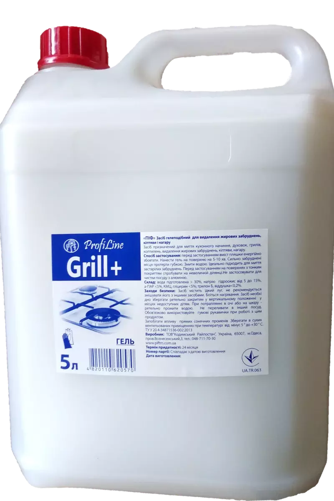

Очищає від вапняного та мильного нальоту, іржі та бруду акрилові, емальовані, керамічні, хромовані, нержавіючі, пластикові, скляні поверхні та крани. Склад: Вода підготовлена > 30%, ортофосфорна кислота, органічні кислоти від 2 до 5 %, ПАР <5%, віддушка, барвник <0,2%. Нанести засіб на забруднену поверхню, потерти щіткою і змити водою. Для видалення стійкого бруду або плям іржі витримати засіб на поверхні 5-10 хв, потерти щіткою і змити водою.
наша продукція
Використовується для очищення каналізаційних труб, сифонів кухонних мийок та ванн, видалення жирових та білкових забруднень, волосся, залишків їжі, знищення неприємного запаху. Залити 200-250 мл засобу в зливний отвір раковини або ванни (для унітазу - 500 мл) і залишити на 4 години, краще на ніч. Після цього промити велику кількість гарячої води. Для профілактики рекомендується застосовувати не рідше ніж раз на місяць. Заходи безпеки: Засіб містить їдкий луг, не рекомендується змішувати його з іншими засобами. Боїться нагріву. Засіб необхідно зберігати ретельно закритим у вертикальному положенні у місцях, недоступних дітям. При попаданні в очі чи на шкіру - ретельно промити водою. Обов'язково використовуйте гумові

Спосіб застосування: перед застосуванням вміст пляшки збовтати, нанести на поверхню на 5-10 хв. Сильно забруднені місця протерти губкою. Змити водою. Ідеально підходить для миття застарілих забруднень. Для очищення фритюрниць залити гарячу воду вище за рівень олії, додати 100-200 мл засобу на кожен літр води, залишити на 1-2 години, після чого воду злити, поверхню очистити щіткою та ретельно промити проточною водою. Не застосовувати засіб для обробки алюмінієвих, емальованих, скляних та лакофарбових поверхонь! Під час роботи використовувати гумові рукавички.

Спосіб застосування: перед застосуванням вміст пляшки збовтати, нанести на поверхню на 5-10 хв. Сильно забруднені місця протерти губкою. Змити водою. Ідеально підходить для миття застарілих забруднень. Для очищення фритюрниць залити гарячу воду вище за рівень олії, додати 100-200 мл засобу на кожен літр води, залишити на 1-2 години, після чого воду злити, поверхню очистити щіткою та ретельно промити проточною водою. Не застосовувати засіб для обробки алюмінієвих, емальованих, скляних та лакофарбових поверхонь! Під час роботи використовувати гумові рукавички.
Використовується для миття підлоги з лінолеуму, сильно забруднених поверхонь з мармуру (підлоги, стін, фасадів будівель та ін.), наливної підлоги, керамічної плитки та інших поверхонь за допомогою спеціального обладнання або ручного миття. Спосіб застосування: Розчинити в 50-100 мл засобу в 5-6л води. За допомогою губки, тканини і т.п. помити забруднену поверхню. У разі сильно забруднених поверхонь використовувати нерозбавлену, ретельно потерти поверхню і промити водою. Засіб замерзає, після розморожування зберігає свої властивості. Запобігати впливу прямих сонячних променів, зберігати у сухих вентильованих приміщеннях при температурі від мінус 5° до +30°
Використовується для миття підлоги з лінолеуму, сильно забруднених поверхонь з мармуру (підлоги, стін, фасадів будівель та ін.), наливної підлоги, керамічної плитки та інших поверхонь за допомогою спеціального обладнання або ручного миття. Спосіб застосування: Розчинити в 50-100 мл засобу в 5-6л води. За допомогою губки, тканини і т.п. помити забруднену поверхню. У разі сильно забруднених поверхонь використовувати нерозбавлену, ретельно потерти поверхню і промити водою. Засіб замерзає, після розморожування зберігає свої властивості. Запобігати впливу прямих сонячних променів, зберігати у сухих вентильованих приміщеннях при температурі від мінус 5° до +30°

Чудово розчиняє вапняний наліт, сечовий камінь, іржу, руйнує складні забруднення. Використовується для швидкого та якісного чищення унітазів,раковин, кахельних та керамічних поверхонь. Спосіб застосування: Нанести на поверхню унітазу та під обідок, потерти щіткою, змити водою. У разі сильних вапняних відкладень залишити на 5-15 хвилин, потерти щіткою, змити водою.

Засіб призначений для миття скла вікон і автомобілів, дзеркал, кришталю, фарфору, кахлю, кераміки, зовнішніх панелей електроприладів, а також хромованих поверхонь. Спосіб вживання: нанести засіб на забруднену поверхню і витерти насухо. Склад: вода підготовлена понад 30%, ізопропіловий спирт до 10%,розчин аміаку від 0.5 до 1%, ПАР, віддушка, барвник до 0.2%. Зберігати при температурі від 0°С до 30°С у сухих приміщеннях. Засіб замерзає, при розморожуванні зберігає свої властивості. Уникати потрапляння прямих сонячних променів.